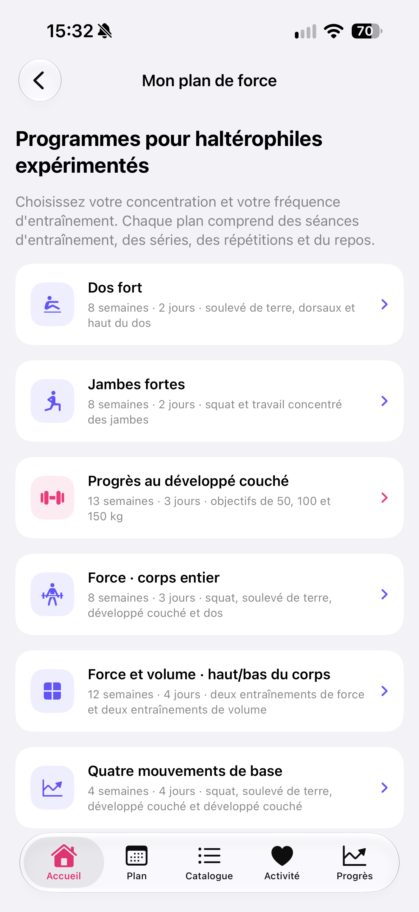

Par Nikita Revin, développeur de Tonus · 27 octobre 2026
Comprenez les résultats de départ, l’arrondi des charges, les jours du cycle et les conditions de validation d’un programme de force.
La configuration d’un programme de force comporte des champs différents selon le programme choisi. Avant d’enregistrer, lisez les exigences affichées, identifiez les résultats de départ demandés et vérifiez les jours retenus. Cet article explique le formulaire de Tonus 1.4.
Lire la fiche du programme choisi
La page Mon plan de force présente six programmes. Les cartes indiquent leur orientation, la durée du cycle et le nombre de jours par semaine. Elles précisent que ces programmes s’adressent à des pratiquants expérimentés.
Touchez une carte pour lire sa configuration. Selon le programme, le formulaire demande des résultats connus pour certains exercices ou permet de saisir des charges de travail manuellement. Le nom d’un programme ne suffit pas à déterminer s’il correspond à votre niveau ou au matériel disponible.

Renseigner les résultats de départ demandés
La section Résultats de départ utilise des performances que vous connaissez déjà. Pour le développé couché, le champ décrit une répétition propre, en kilogrammes, barre comprise. Ne testez pas un maximum uniquement pour remplir le formulaire et n’inventez pas de valeur manquante.
Les champs obligatoires varient selon le programme. Par exemple, le programme de force du corps entier demande des résultats pour le développé couché, le squat et le soulevé de terre. Le programme à quatre mouvements demande aussi le résultat au développé au-dessus de la tête.
Dans la configuration du programme de développé couché, les champs optionnels du squat et du soulevé de terre peuvent rester vides pour choisir leurs charges manuellement. Cette possibilité ne s’applique pas à tous les programmes : relisez les indications du formulaire ouvert.
Comprendre l’arrondi et l’objectif affiché
Le réglage d’incrément sert à arrondir le poids total proposé par le calcul. Il ne signifie pas qu’il faut ajouter cette quantité à chaque séance. Vérifiez l’unité affichée et choisissez un incrément correspondant aux charges que vous pouvez réellement préparer.
Les calculs en pourcentage utilisent les résultats de départ enregistrés. Cette base reste fixe pendant le cycle ; les pourcentages et les répétitions suivent le programme choisi. Une charge de travail saisie manuellement pour un exercice est un autre réglage.
Dans le programme de développé couché, le poids cible est un objectif. Le choisir ne garantit pas de l’atteindre. Si la différence entre objectif, résultat de départ et charge proposée n’est pas claire, relisez les explications avant de valider.
Vérifier les jours et les conditions de validation
Le formulaire impose un nombre de jours et un espacement adaptés au programme sélectionné. S’il indique une combinaison de jours invalide, corrigez le calendrier dans le formulaire. Une combinaison acceptée par le logiciel ne remplace pas l’évaluation de vos disponibilités ou de votre situation.
Le bouton d’enregistrement reste désactivé tant que des données requises, les jours ou la confirmation de préparation ne sont pas valides. Lisez la confirmation affichée et ne la cochez que si elle correspond à votre situation. Si un programme de force existe déjà, Tonus demande confirmation avant de le remplacer.
Après l’enregistrement, le calendrier affiche le cycle choisi. Le programme flexible et l’historique déjà enregistrés restent sauvegardés. Le nouveau programme de force commence avec sa propre progression.
Relire la séance avant de commencer
Ouvrez les détails de la séance pour consulter les exercices, les séries, les répétitions et le repos. Les valeurs en kilogrammes, les pourcentages et les durées ont des rôles différents. La leçon Répétitions, séries et temps aide à lire ces indications.

Consulter un aperçu ne termine pas une séance. La possibilité de démarrer dépend de la prochaine séance du cycle et du jour sélectionné. Pour retrouver les définitions, consultez le guide des leçons et du glossaire.
Les charges affichées ne garantissent ni leur adéquation à votre situation ni un résultat physique. Pour vérifier la technique, les conditions de sécurité ou le choix d’un programme, faites-vous accompagner par un professionnel qualifié.
Ce guide décrit Tonus 1.4 pour iPhone sous iOS 17 ou une version ultérieure. L’accès est gratuit, sans compte, abonnement ni achats intégrés. Les plans et les consignes écrites fonctionnent hors ligne. Les vidéos en ligne nécessitent une connexion ; les services externes peuvent afficher des publicités. La connexion à Apple Santé est facultative.